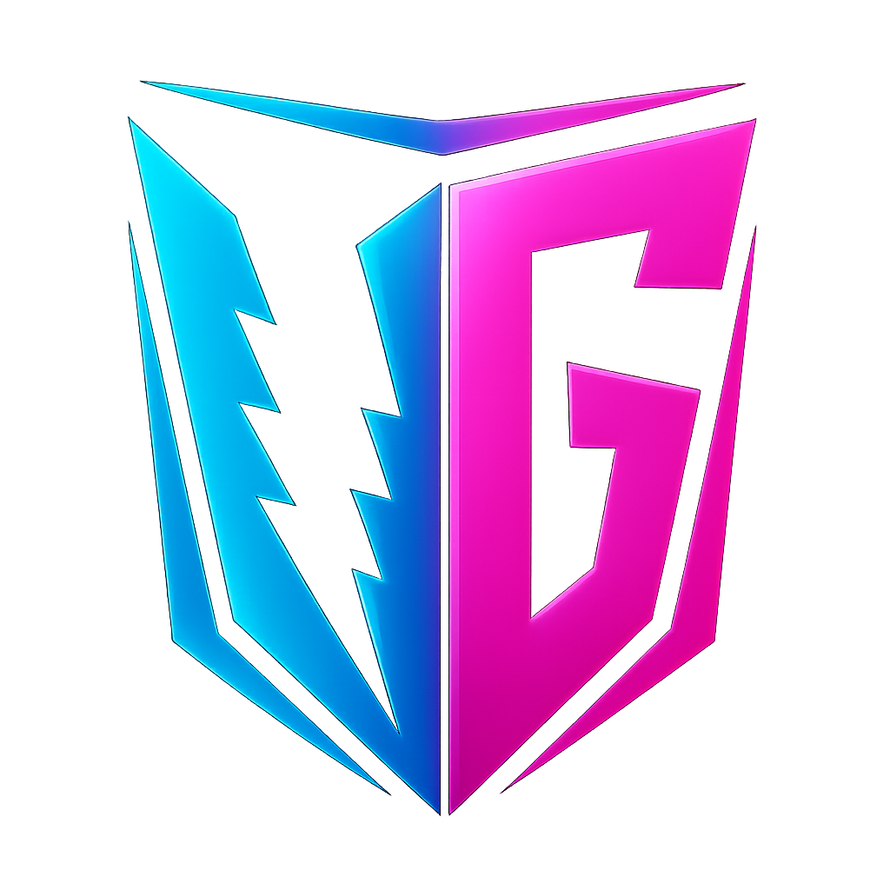

Your complete guide to using the RAN Tracker.
After clicking Killed Now, the timer will start counting down to the next spawn.
Click the calendar icon to choose a new date & time.
After setting the date & time, click Set Manual to save the time to the tracker.
Use this if the server is restarted, to reset all timers at once.
Check the Kill History to find the latest kill time, then edit it manually into your tracker.
Enter your Admin PIN then click OK to clear the Kill History.
On a small browser window, click and hold anywhere on the channel panels then drag left or right to move between CH 0, 1, 2 and 3.